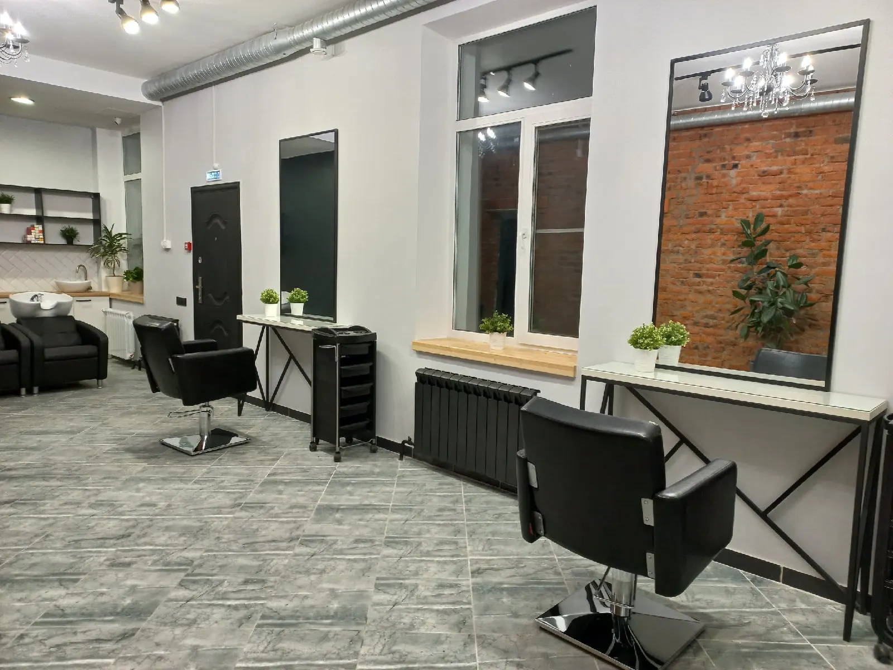
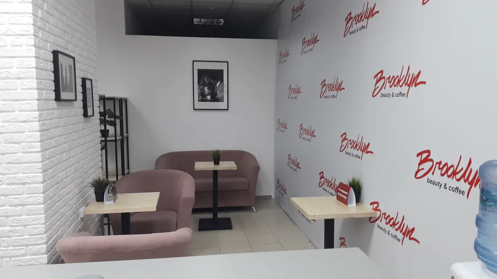
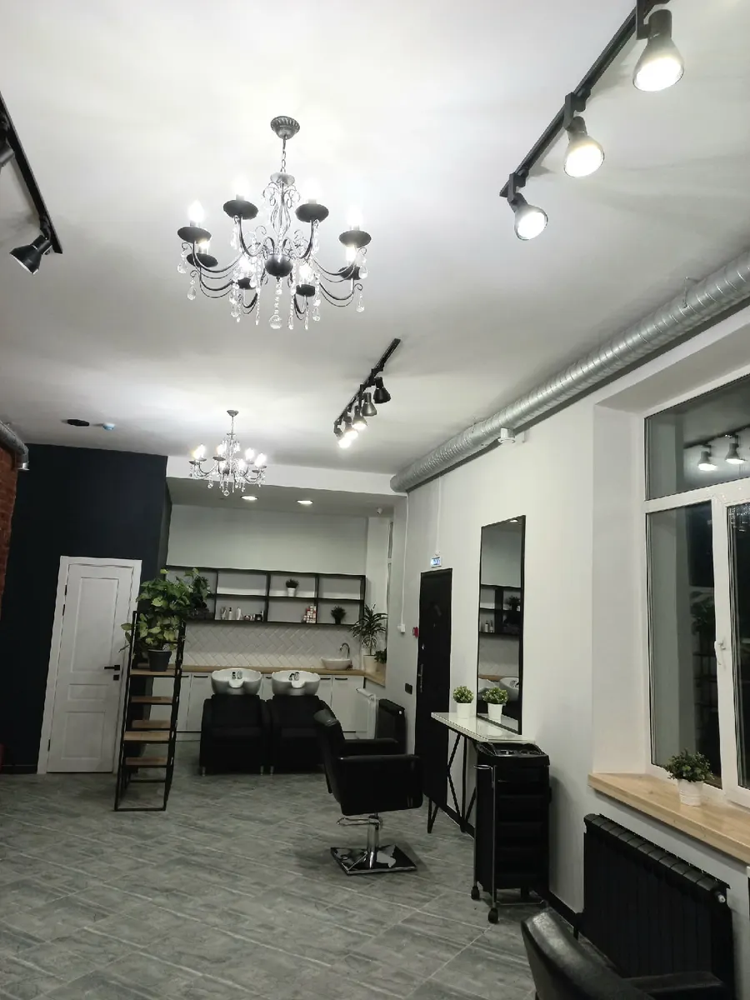

Парикмахерская и кофе на Тани Барамзиной, 57
Парикмахерская в Глазове: стрижки, окрашивание и кофе с собой
Запись к мастеру, у которого стригутся годами. Рейтинг 4,8 на Яндекс Картах, 45 отзывов.
- Рейтинг 4,8 на Яндекс Картах, 144 оценки
- Мужские и женские стрижки, окрашивание
- Beauty coffee: кофе с собой

Что есть в салоне
Входит
- Мужские и женские стрижки
- Окрашивание
- Кофе с собой (beauty coffee)
- Зона кофе в салоне
Отдельно, если нужно
- Цены - при записи
Услуги и цены
Цены назовут при записи.
Стрижки и окрашивание
- Мужская стрижкауточнить
- Женская стрижкауточнить
- Окрашиваниеуточнить
Точную цену назовут при записи: +7 (952) 409-59-99.
Как записаться
- 01
Выбрали услугу и день
Мужская или женская стрижка, окрашивание.
- 02
Написали в Telegram или WhatsApp
Или позвонили: +7 (952) 409-59-99.
- 03
Пришли на Тани Барамзиной, 57
Строение 24. Часы работы - в контактах.
- 04
Выпили кофе
Beauty coffee: кофе с собой или в зоне кофе салона.


Что вы получите
Мастера, к которым ходят годами
Из отзыва: стригусь более 20 лет, стригутся оба сына и брат.
Стрижка и окрашивание под ваши пожелания
Клиенты пишут, что мастер учёл все пожелания и дал советы по уходу.
Кофе в салоне
Beauty coffee: кофе с собой.
Оценка клиентов 4,8
144 оценки и 45 отзывов на Яндекс Картах.
Отзывы с Яндекс.Карт
«Стригусь у нее более 20 лет. Стригутся оба сына и брат, все довольны от мала до велика.»
Алексей Смольников · 24 мая
«Стрижка и покраска для женщины важный элемент ее внешности.»
Татьяна Першина · 5 мая 2025
«Настоящий профессионал! Сделала именно ту стрижку и окрашивание, о которой я мечтала. Учла все пожелания, дала советы по уходу за волосами.»
Мария Фёдорова · 28 марта
Отзывы с карточки на Яндекс.Картах, без правок.
Частые вопросы
Как записаться?
Напишите в Telegram или WhatsApp либо позвоните: +7 (952) 409-59-99.
Когда работаете?
Пн-пт 10:00-19:00, сб 10:00-17:00, воскресенье выходной.
Сколько стоит стрижка?
Цену называют при записи: +7 (952) 409-59-99.
Можно ли взять кофе с собой?
Да, салон называется Brooklyn beauty coffee: кофе с собой есть.
Запишитесь к мастеру
- Адрес
- Тани Барамзиной, 57, стр. 24, Глазов
- Часы
- Пн-пт 10:00-19:00, сб 10:00-17:00, вс выходной
- Телефон
- +7 (952) 409-59-99